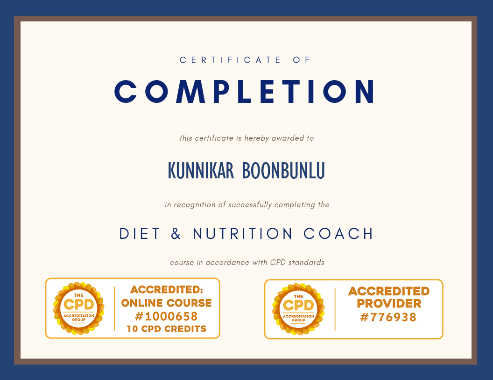
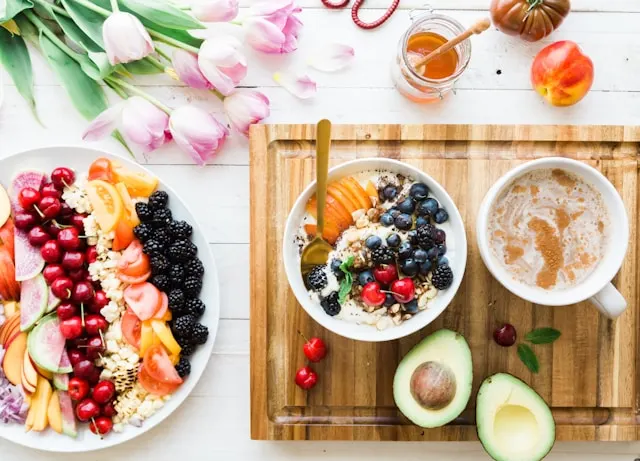

Se bättre ut, må bättre
F.I.T Stark och vältränad
Fitness och massageterapi kan verka som två separata vägar till välbefinnande, men tillsammans kan de skapa ett kraftfullt stöd för rörelse, återhämtning och välmående.
På KB Wellness Studio tror vi på ett holistiskt synsätt på välbefinnande. Oavsett om du är idrottare, tränar på fritiden eller vill hålla dig aktiv och minska stress, kan en kombination av rörelse och massage stödja dina personliga mål för hälsa och välbefinnande.
Boka behandling 💆🏻♀️


Tränings- och hälsotips
Att leva en F.I.T 🏋🏻♂️ och hälsosam livsstil 🥗 innebär en kombination av regelbunden fysisk aktivitet, balanserad kost, återhämtning och medvetna vanor.
På KB Wellness Studio delar vi tränings- och välbefinnandetips som kan hjälpa dig att arbeta mot dina personliga mål för hälsa och livsstil. Vår coach och våra terapeuter finns här för att stödja din resa mot ökat välbefinnande.
Kunnikar Boonbunlu
Träningscoach

Träningsfördelar
-

Kost- & Näringstips
Fördelar:
- 🍏 Stödjer energin: En balanserad kost ger näringsämnen som behövs för en aktiv livsstil.
- 🥑 Stödjer viktkontroll: Balanserade måltider och lämpliga portioner kan stödja hälsosamma vanor.
- 🍉 Stödjer återhämtning: Bra kost bidrar med näringsämnen som kroppen behöver efter fysisk aktivitet.
- 🍵 Stödjer matsmältningen: En varierad och näringsrik kost kan bidra till en god matsmältningshälsa.
Proffstips: Fokusera på varierad mat, protein av god kvalitet, grönsaker, frukt, fullkorn och hälsosamma fetter utifrån dina individuella behov.

Svep för att läsa mer
Kost- och livsstilstips för ett hälsosamt liv
-
Kosttips
Att upprätthålla en balanserad kost och hälsosam livsstil kan stödja det allmänna välbefinnandet. Här är några enkla idéer för hållbara vanor i vardagen:
1. Ät en balanserad kost
Inkludera olika frukter, grönsaker, fullkorn, magra proteiner och hälsosamma fetter i dina måltider. Det ger en bred variation av näringsämnen för energi och välbefinnande.
Tips: Fyll ungefär halva tallriken med färgglada grönsaker och frukter.2. Håll dig hydrerad
Drick vatten regelbundet under dagen för att stödja kroppens vätskebalans och matsmältning. Begränsa sockrade drycker och välj gärna vatten eller örtte.
Tips: Ha med dig en återanvändbar vattenflaska.3. Var uppmärksam på portionsstorlekar
Var medveten om portionsstorlekar och lyssna på kroppens hunger- och mättnadssignaler.
Tips: Ät långsamt och ge dig själv tid att njuta av varje måltid.4. Begränsa mycket bearbetade livsmedel
Bygg vardagens måltider kring näringsrika livsmedel och begränsa mat med mycket tillsatt socker, salt eller mindre hälsosamma fetter.
Tips: Tillaga enkla måltider hemma med färska ingredienser.5. Välj mellanmål med omtanke
Välj exempelvis frukt, nötter, frön eller yoghurt när det passar dina näringsbehov.
Tips: Planera mellanmål i förväg så att du alltid har bra alternativ tillgängliga.Livsstilstips
1. Prioritera sömn
Sträva efter regelbunden sömn av god kvalitet och skapa en avslappnande kvällsrutin.
Tips: Minska skärmtid och koffein nära läggdags.2. Håll dig aktiv
Inkludera aktiviteter du tycker om i vardagen, exempelvis promenader, yoga, cykling eller dans.
Tips: Sätt realistiska mål och bygg gradvis upp en regelbunden vana.3. Hantera stress
Prova metoder som djupandning, meditation, dagboksskrivande eller regelbundna pauser.
Tips: Ta korta stunder under dagen för att pausa och återhämta dig.4. Sätt upp uppnåeliga mål
Dela upp större mål i mindre och hanterbara steg och uppmärksamma dina framsteg längs vägen.
Tips: Skriv ner dina mål och följ dina framsteg.5. Undvik skadliga vanor
Undvik rökning och rekreationsdroger och håll alkoholkonsumtionen inom rekommenderade riktlinjer.
Tips: Försök ersätta ohälsosamma vanor med positiva alternativ när det är möjligt.Praktiska tips
1. Måltidsrutiner
Hitta en måltidsrutin som fungerar bra för ditt schema och din livsstil.
2. Medvetet ätande
Ät långsamt, njut av smakerna och minska distraktioner under måltiderna.
3. Umgås för välbefinnande
Dela måltider och aktiviteter med vänner och familj för att stödja social gemenskap och välbefinnande.
4. Regelbundna hälsokontroller
Följ lämpliga hälsokontroller och diskutera individuella hälsoproblem med kvalificerad vårdpersonal.